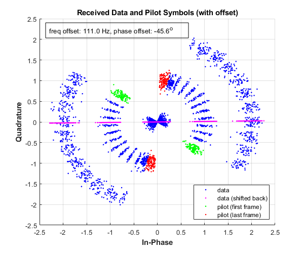

Contents
clear all; close all; clc;
1. Parameter setup
Rcvd = load('../data/Rcvd_Jeong.mat').Rcvd;
RRC_rolloff = 0.75;
B_RCOS = [0.0038,0.0052,-0.0044,-0.0121,-0.0023,0.0143, ...
0.0044,-0.0385,-0.0563,0.0363,0.2554,0.4968, ...
0.6025,0.4968,0.2554,0.0363,-0.0563,-0.0385, ...
0.0044,0.0143,-0.0023,-0.0121,-0.0044,0.0052,0.0038].';
chipRate = 1e6;
upRate = 4;
cpf = 255;
H = hadamard(8);
nFrames = length(Rcvd)/upRate/cpf;
2. Generate maximal length sequence (M-sequence)
taps = [8 7 6 1];
taps = [max(taps), fliplr(max(taps) - taps(taps ~= max(taps)))];
initial_state = ones(max(taps),1);
PNsequence = LFSR(taps, initial_state);
3. Apply receive filter (Root Raised Cosine with B_RCOS coefficients)
rx_filtered = filter(B_RCOS, 1, Rcvd);
rcvd = downsample(rx_filtered, upRate);
4. Prepare pilot
num_bit_per_ascii_char = 8;
num_char_per_frame_pilot = 4;
pilotframe = zeros([num_bit_per_ascii_char*num_char_per_frame_pilot, 1]);
pilot_modbpsk = bpsk.modBPSK(pilotframe);
pilot_h_chan = H(1,:);
pilot_hadamard = (pilot_modbpsk * pilot_h_chan).';
pilot_rcvd = decodePilot(pilot_hadamard, PNsequence);
pilot_mod = bpsk.modBPSK(pilot_rcvd);
firstframe = rcvd(1:cpf);
thresh = 0.5;
dataStartIdx = find(abs(firstframe) > thresh, 1, 'first');
pilotFirstFrame = rcvd(dataStartIdx : (dataStartIdx-1)+cpf);
pilotLastFrame = rcvd(end-(cpf-1) : end);
loc_pilotframe = 0;
loc_pilotframe_corr = 0;
for i = linspace(1,floor(length(rcvd)/cpf)-1,floor(length(rcvd)/cpf)-1)
rho = corr(real(pilot_mod), real(rcvd(dataStartIdx+(i-1)*cpf : (dataStartIdx+cpf*(i)-1))'));
if rho > 0.9
loc_pilotframe = i;
loc_pilotframe_corr = rho;
end
end
fprintf("\ninitial pilots end at frame #%i : cross-corr: %1.6f\n", loc_pilotframe, loc_pilotframe_corr)
initial pilots end at frame #1 : cross-corr: 0.993629
5. Determine offsets
pfirst_demod = bpsk.demodBPSK(real(pilotFirstFrame));
assert(sum(pilot_rcvd==pfirst_demod)==cpf);
plast_demod = bpsk.demodBPSK(real(pilotLastFrame));
assert(sum(pilot_rcvd==plast_demod)==int8(cpf/2));
pfirst_phase = angle(pilotFirstFrame);
plast_phase = angle(pilotLastFrame);
pfirst_phase_shifted = pfirst_phase - not(pfirst_demod')*pi;
plast_phase_shifted = plast_phase - not(plast_demod')*pi;
diffphase1 = diff(pfirst_phase_shifted);
diffphase2 = diff(plast_phase_shifted);
freq_offset_per_chip = mean([mean(mod(diffphase1,2*pi)),mean(mod(diffphase2,2*pi))]);
freq_offset_hz = freq_offset_per_chip/2/pi*chipRate;
freq_offset_phasor = exp(-1j*freq_offset_per_chip * (0:size(pilotFirstFrame,2)-1));
phase_shift = -1 * (pfirst_demod') * pi;
phase_offset = mean(angle(pilotFirstFrame .* freq_offset_phasor) + phase_shift);
phase_offset_deg = phase_offset * (180/pi);
6. Shift data frames and decode message
num_remove_last_pilot = 1;
data_frames = rcvd(dataStartIdx+cpf*loc_pilotframe ...
:(dataStartIdx-1)+(nFrames-num_remove_last_pilot)*cpf);
phasor1_freq_offset = exp(-1j*freq_offset_per_chip*(cpf:cpf+length(data_frames)-1));
phasor2_phase_offset = exp(-1j*phase_offset);
data_frames_shifted = data_frames ...
.* phasor1_freq_offset ...
.* phasor2_phase_offset;
data_minus_pilot = data_frames_shifted - repmat(pilot_mod',1,nFrames-2);
decoded1 = decodeData(real(data_minus_pilot))';
walshchan = H(6,:);
message = translate(decoded1, PNsequence, walshchan);
Results
figure('Position',[550 300 600 500]);
hold on;
scatter(real(data_frames),imag(data_frames),'b.');
scatter(real(data_frames_shifted),imag(data_frames_shifted),'m.');
plot(real(pilotFirstFrame),imag(pilotFirstFrame),'g.', ...
real(pilotLastFrame),imag(pilotLastFrame),'r.'); hold off;
annotation('textbox', [.15 .85 .47 .06], ...
'Color', 'k', ...
'String', sprintf('freq offset: %1.1f Hz, phase offset: %1.1f^o', ...
freq_offset_hz, phase_offset_deg));
legend('data', 'data (shifted back)','pilot (first frame)','pilot (last frame)','Location','southeast');
title('Received Data and Pilot Symbols (with offset)');
xlabel('In-Phase','FontWeight','bold');
ylabel('Quadrature','FontWeight','bold');
grid on;
fprintf('- Freq offset: %1.4f (radians) per chip, or %1.4f (Hz) total\n', ...
freq_offset_per_chip, freq_offset_hz)
fprintf('- Phase offset: %1.4f (radians) per chip, or %1.4f (degrees) total\n', ...
phase_offset, phase_offset_deg)
fprintf('- Message: %s\n', message)
fprintf(">> %s %s\n", "this message comes from a scene from 'A Christmas Story' movie", ...
"in which Ralphie gets his decoder ring and learns something about the world.")
- Freq offset: 0.0007 (radians) per chip, or 111.0028 (Hz) total
- Phase offset: -0.7956 (radians) per chip, or -45.5861 (degrees) total
- Message: Be Sure To Drink Your Ovaltine.
>> this message comes from a scene from 'A Christmas Story' movie in which Ralphie gets his decoder ring and learns something about the world.

Utility Class Definitions / Functions
classdef bpsk
methods(Static)
function [result] = modBPSK(data)
if size(data,2) > 1
data = data';
end
bpskModulator = comm.BPSKModulator;
bpskModulator.PhaseOffset = 0;
if size(data,2) > 1
data = data';
end
result = real(-1*bpskModulator(data));
end
function [result] = demodBPSK(data)
if size(data,2) > 1
data = data';
end
result = double(data > 0);
end
end
end
function [PNsequence] = LFSR(poly, initial_state)
m = max(poly);
states = zeros([m, 1]);
states(initial_state) = 1;
N = 2^m - 1;
PNsequence = zeros([N 1]);
for i = 1:N
PNsequence(i) = states(end);
temp = mod(sum(states(poly)),2);
states(2:end) = states(1:end-1);
states(1) = temp;
end
end
function [result] = decodePilot(pilot_hadamard, PNsequence)
Hadamard = pilot_hadamard(1:length(PNsequence));
Hadamard_demod = bpsk.demodBPSK(Hadamard);
result = xor(Hadamard_demod, PNsequence);
end
function [result] = decodeData(data)
if size(data,2) > 1
data = data';
end
result = zeros(size(data));
for i = 1:length(data)
if data(i) > 0.5
result(i) = 1;
elseif data(i) >= -0.5 && data(i) <= 0.5
result(i) = 0;
elseif data(i) < -0.5
result(i) = -1;
end
end
end
function [result] = translate(data, PNsequence, Hchan)
frames = reshape(data, length(PNsequence), []);
frames2 = frames(:, end);
frames1 = frames(:, 1:end-1);
cpf = 64; num_char = 3;
data1 = zeros(cpf*num_char, size(frames1,2));
for i = 1:size(frames1,2)
frames1_demod = bpsk.demodBPSK( frames1(frames1(:,i)~=0,i) );
data1(:,i) = xor( frames1_demod, PNsequence(1:cpf*num_char) );
end
frames2_demod = bpsk.demodBPSK(frames2(frames2~=0));
data2 = xor(frames2_demod, PNsequence(1:length(frames2_demod)));
data = [data1(:); data2(:)];
WalshDecoded = Hchan * reshape(bpsk.modBPSK(data),8,[]) / 8;
decoded = bpsk.demodBPSK(WalshDecoded);
ascii_dec = bi2de(reshape(decoded,8,[]).');
result = char(ascii_dec.');
end